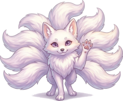

风物无言，韵自有所寄
草木檐影，流水风声，本无言语。人心静处，方能接住这份意趣。 不必强索道理，只把片刻触动收存于此，留待闲时回望。
不觉春晓，思秋雨
草屋一楹，素色为境，浅墨书怀。穷物之理，观世之缘， 简语载心，声息不彰，辞采不繁。
雨声在檐，水声在侧
一
天地自有声容，目遇之成色，耳得之成音，风物余韵，片影残音，皆是人间注脚。
草木檐影，流水风声，本无言语。人心静处，方能接住这份意趣。 不必强索道理，只把片刻触动收存于此，留待闲时回望。
世间万象纷繁，难以尽收眼底。不必贪求全貌，偶遇一景、一闻， 撷取当中一点余韵便足够。多则扰心，少则存味。
风光清音，本不专为一人而来。相逢多是偶然，不必刻意追寻。 遇则留存，去则任之，不执于占有，只记当下会心一刻。
二
人各有所向，亦各有所守。静而自省，明取舍之由，知本心所好。不刻意标榜，只记下立身之底色，作为行止的参照。
自有志趣取舍，不必随世俯仰。静下内省，辨明心中所喜、所拒。顺心择路
世间纷扰多外饰热闹，安守自身节奏，分清何为外物，何为真我
一人之偏好，藏其性情底色。不必追求宏大高远，寻常喜好之中， 便可窥见自身的根性。接纳本真，便是省察。
三
一念起于静思，万想归于简省。凡所思所构，不必即刻成型。收存零星构想，待闲时打磨梳理，观思绪起落之迹。
思绪往往起于片刻静想，不必急于铺陈。灵光偶现之时，暂且收存， 不急求证、不事渲染。留待日后慢慢推演，看这一念可否生长为完整思路。
构想本无固定形态，随见闻而流转。不必执着初始想法，静下来辨析取舍， 只留存合乎本心事理的部分，冗杂之念自然散去。
宏大构想皆始于细碎念头。点滴想法看似微小，长久积累，彼此碰撞勾连， 便有可能开辟出新的思考路径。不必轻视一念之微。
功能
衡者，权轻重；几者，察微动。两件趁手的器物，用来把想法推出去。
写下你即将做的事情，参谋一轮判明类型、摆出将要面对的问题与出路
情感上的疑问在这里或许有答案
藏品
观一隅而想全貌，草屋虽简，略有意境
山色入窗，纸上有光。此处留给最想反复看的那一幅。
疏影横斜，落笔留白处最要紧。
器物的静气，来自它不必被使用的那一刻。
雨后初霁，青与赭正好相照。
听音
